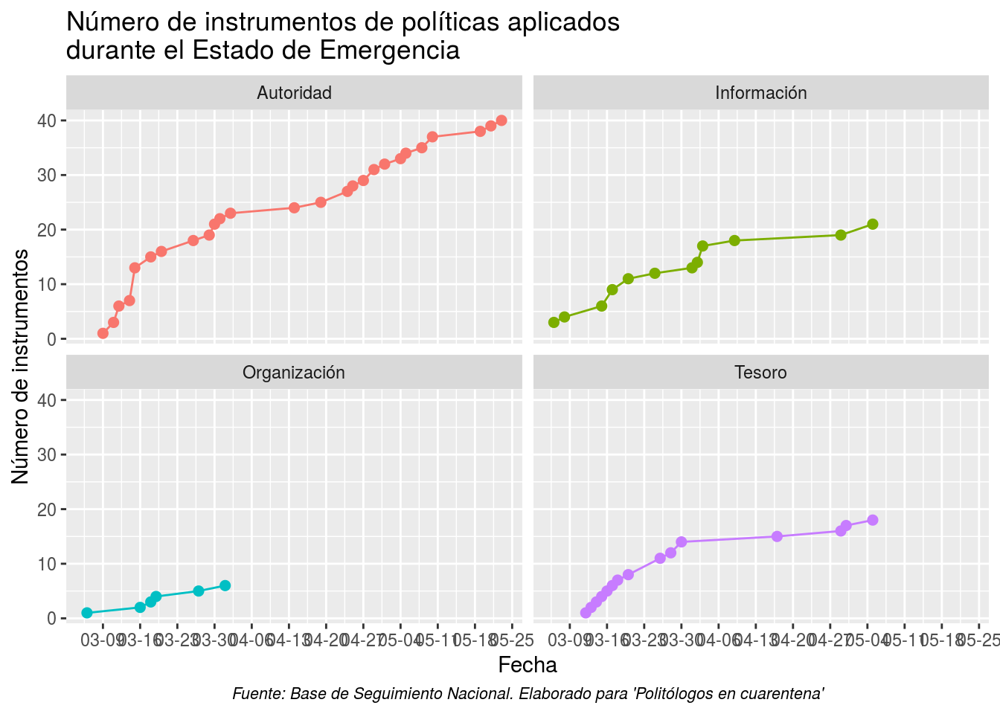
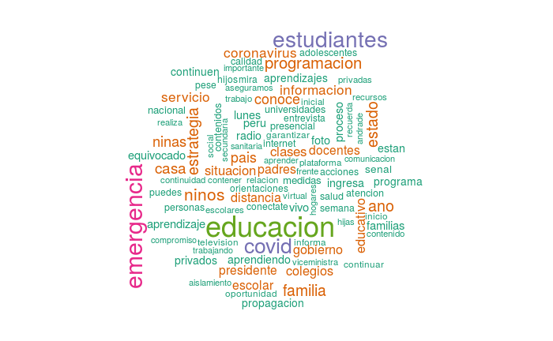
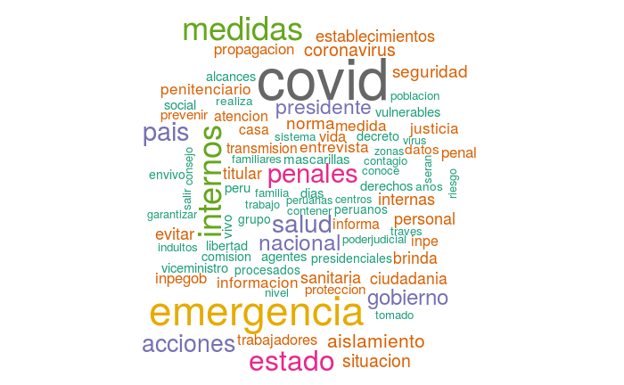

Seguimiento nacional
Introducción
El objetivo del seguimiento nacional es registrar la cadena de decisiones políticas adoptadas por el gobierno nacional en el contexto de la Emergencia Nacional a causa del COVID-19.
Este seguimiento cuenta con 7 secciones: Trayectoria de las decisiones, instrumentos de politicas, redes de politicas, establecimiento de los problemas publicos, servidores de primera linea, eventos de protestas, pronunciamientos y demandas.Trayectoria de las decisiones públicas
Para visualizar la actualización de las medidas frente al COVID-19: Monitoreo de la toma de decisiones

Análisis por instrumentos de política pública
Los instrumentos basados en la información, son aquellas formas de uso de la información donde el Estado influye en el cumplimiento de determinadas conductas en los ciudadanos; Ejemplo: “Reporte diario de casos”
Los instrumentos basados en la autoridad está compuesto por las regulaciones directas como parte del control directo del comportamientos bajo normas establecidas y sus respectivas sanciones; Ejemplo: “Decretos para la inmovilización social”
Aquellos instrumentos basados en el tesoro tienen como principal acción generar ingresos o pérdidas que incentiven las conductas esperadas; Ejemplo: “Subsidio del 35% de sueldos en planillas”
- Finalmente, los instrumentos basados en la organización, los cuales poseen una manifestación organizacional de la cual se construye un tipo de apoyo o sustento para afrontar el problema público. Ejemplo: “Conformación del Comando COVID”
Entonces, ¿Cuáles han sido los instrumentos de política puestos en práctica por el gobierno para enfrentar la crisis del COVID-19?

Redes de subsistemas politicos
Para ver la leyenda de los tipos de actores por colores de los nodos aquí . El tamaño de los nodos es construida por el número de conexiones con la finalidad de representar sus vínculos en la red.
{kind=link}
Agendación de los problemas públicos
El giro argumentativo en las políticas públicas ha significado la inserción del enfoque constructivista, cuya premisa fundamental es la de ponderar a la argumentación como esencial en todas las etapas de formulación de las políticas. Así pues, registrando los discursos de los actores durante el proceso de emergencia del COVID-19 se ha venido construyendo una imagen de la política (policy image) que encuadran el problema mediante información empírica y sus interpretaciones para las soluciones por adoptar desde el gobierno (Baumgartner & Jones, 1993)
Asimismo, debemos tener en cuenta la teoría de las corrientes múltiples, propuesta por Kingdom (1984), que se basa en la identificación de los problemas, las políticas públicas y la política. La conjugación de estas, impulsada por actores clave, abrió una ventana de oportunidad para que surjan una serie de decisiones para afrontar la emergencia sanitaria que representa el COVID-19.Tweets de Ministerios en el contexto de Estado de Emergencia
Palabras más frecuentes: @MINSA_Peru

Palabras más frecuentes: @MEF_Peru

Palabras más frecuentes: @Minedu_Peru

Palabras más frecuentes: @Midis_Peru

Palabras más frecuentes: @MINJUS_Peru

Situación de los servidores en primera línea
En este contexto de Estado de Emergencia, las principales actividades aún vigentes han sido las relacionadas a salud, seguridad, abastecimiento, residuos sólidos, bajo ciertos protocolos que garanticen su resgardo frente al contagio del coronavirus. Poniendo en la mira, la importancia de estos servidores de primera linea (también denominados por la literatura como street-level bureaucracy). Lipsky (1989) menciona esta categoría para un tipo de empleo público en donde las interacciones cotidianas se enmarcan en la discrecionalidad, y en donde el ideal de la politica suele no poder cumplirse por distintas limitaciones.
Este tipo de funcionarios se encuentran en una encrucijada, ya que su trabajo esta estructurado para lograr objetivos establecidos por un proceso politico/tecnico y que determinan su comportamiento bajo procedimientos estandarizados, y al mismo tiempo se encuentran frente a ciudadanos, los cuales demandan constantemente excepciones como casos individuales o “excepcionales”, es decir pueden reclamar, acatar y/o sugestionar sobre el accionar de estos funcionarios (García, Puemápe & otros, 2017)
Su importancia radica en que son aquellos funcionarios quienes estan implementando las principales medidas en este contexto de Estado de Emergencia, y ello puede verse afectado en caso se presenten fallos en su resgardo.Personal de enfermería
El Colegio de Enfermeros del Perú ha solicitado a Contraloría General de la República la fiscalización dentro de los establecimientos de salud, por el incumplimiento de las medidas de protección, seguridad y dotación de EPP para el personal de Enfermería que atiende pacientes contagiados por Covid-19. (30 de abril del 2020)
Monica Rios (Decana del Colegio de Enfermeros del Perú): “Quien atiende esta expuesto a contagiarse, ya tenemos 350 enfermeras contagiadas” (26 de abril del 2020)
Personal médico

Policias
Max Iglesias (Comandante General de la PNP): “Alrededor de más de dos mil policías contagiados y 24 policias que lamentablemente han fallecido.” (29 de abril del 2020)
Fuerza militar
Walter Martos (Ministro de Defensa): “Hasta el momento han fallecido 6 militares de las Fuerzas Armadas (FF.AA.) a causa del COVID-19 y otros 349 están contagiados en el país” (29 de abril del 2020)
Protestas sociales vinculadas al Estado de Emergencia
La Defensoría del Pueblo define al conflicto social como «un proceso complejo en el que sectores de la sociedad, el Estado o las empresas perciben que sus objetivos, intereses, valores o necesidades son contradictorios». Dentro de esa dinámica, existen las acciones colectivas de protesta, las cuales no son en sí mismas el conflicto social sino una expresión de éste.
Respecto a ello, la Defensoría del Pueblo hace un seguimiento de las acciones colectivas de protesta como «la realización conjunta de hechos generalmente tendientes a efectuar un reclamo en el espacio público». Se refieren a marchas, plantones, toma de locales, bloqueo de vías, etc., es decir, formas públicas de expresar una demanda o descontento y que revelaría la existencia de una controversia.
Dicha acción puede responder a la iniciativa de un grupo de personas, organizado o espontáneo, demandando atención a sus derechos ante el Estado o ante una empresa. Además, puede durar muy poco tiempo si la demanda es atendida o gestionada (Defensoria del Pueblo, 2012).Cantidad de acciones de protestas vinculadas al Estado de Emergencia por sector


Noticias, demandas y pronunciamientos
Este apartado fue construido a partir de la información publicada en plataformas web y que fueron recopiladas en el siguiente grupo de facebook: COVID-19 PERÚ creado por Carlos Andres Guevara.
28/04
SALUD | Mayoría de casos de coronavirus en Puno son policías y personal de Salud. De los 66 casos confirmados de coronavirus en Puno, la mayoría son miembros de la Policía, el INPE y trabajadores de salud Aquí
EDUCACIÓN | Alrededor de 4 mil docentes que laboraban en colegios privados de la región Arequipa se han quedado desempleados, según Rustbel Begazo Salazar, presidente de la Asociación de Instituciones Educativas Privadas de la región Arequipa (Asiepra) Aquí
27/04
JUSTICIA |Los presos de los penales de Ancón 2 en Piedras Gordas, Castro Castro en San Juan de Luringancho, Huamancaca Chico en Junín se han amotinado en protesta por la falta de atención de las autoridades penitenciarias a los reclusos contagiadosiro dos cuerpos de los fallecidos por COVID-19, reportaron los familiares de los reclusos. Aquí
SALUD | El Agustino: Técnicos y enfermeros del hospital Hipólito Unanue exigen pagos de marzo y abril. Aquí
SALUD |El personal de salud del área de Emergencia del hospital de EsSalud protestó por falta de equipos de protección. Autoridades señalan que les otorgan todos los implementos para atención de pacientes. Unos 18 trabajadores dieron positivo al COVID-19. Aquí
SALUD | Personal del Hospital Almanzor realiza plantón por falta de equipos de protección. Aquí
26/04
POBLACION INDÍGENA | La Federación de comunidades nativas de Purus - FECONAPU informó en sus redes sociales el fallecimiento del primer indígena amazónico por Covid-19, hoy 26 de abril, en Pucallpa, Ucayali. Aquí
25/04
SALUD | Pronunciamiento del Cuerpo Médico del Hospital de Emergencias Grau. Aquí